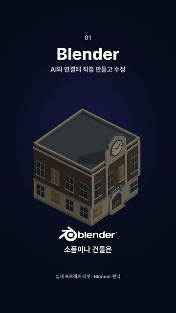
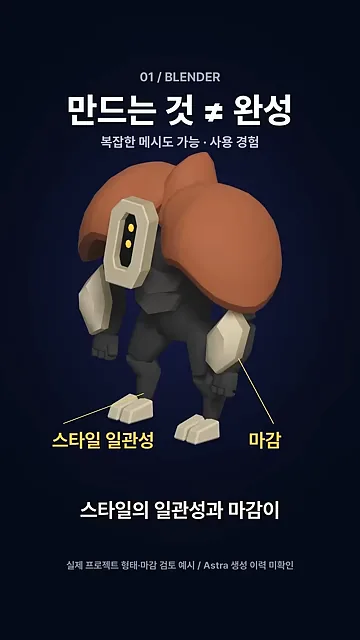
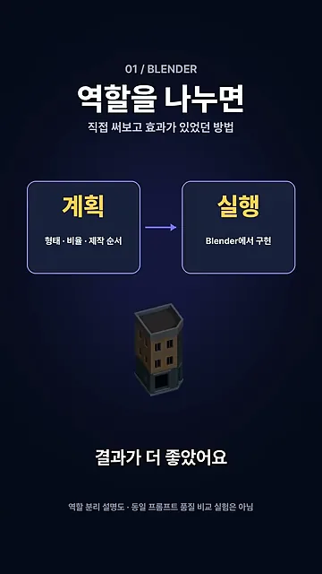
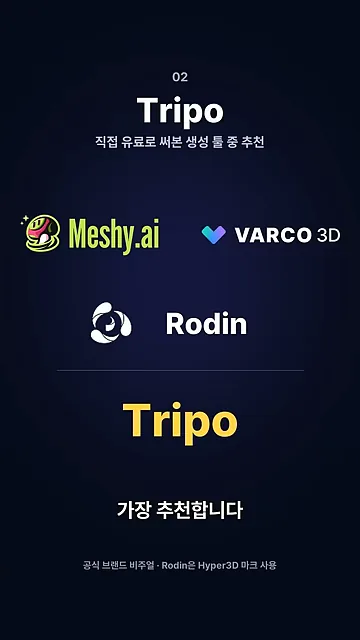
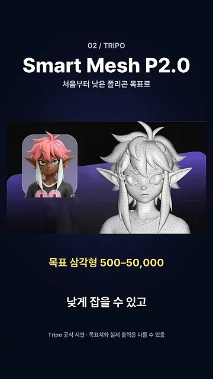
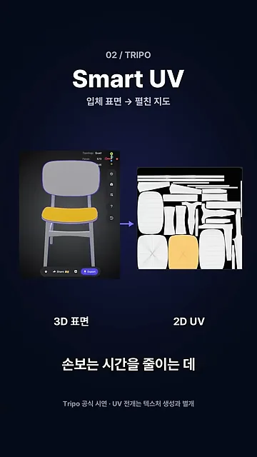
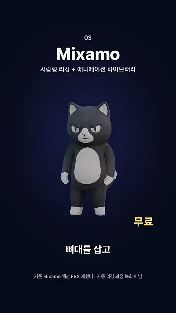
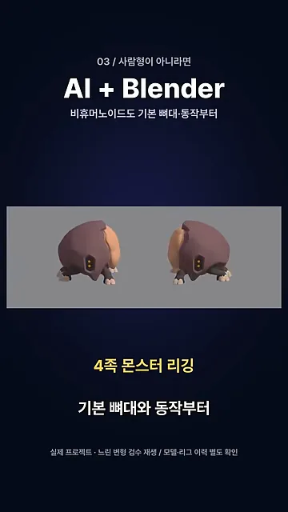
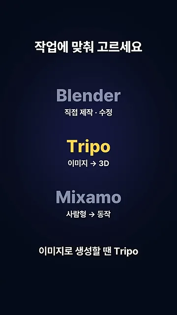

Blender — AI에게 말로 시켜 만들고 고치기
Blender를 AI와 연결하면 건물이나 소품 같은 단순한 에셋은 말로 시켜서 만들고 고칠 수 있어요. 아래 화면의 시계탑 건물은 이 팀의 실제 프로젝트 에셋을 Blender로 렌더링한 거예요. 지붕, 창문, 시계처럼 반듯한 부품이 모인 모양이라 말로 지시하기 좋은 종류예요.

만드는 것과 완성은 달라요
Astra로 복잡한 메시도 만들 수는 있어요. 그런데 이 팀이 써 보니 게임에 바로 넣기엔 두 가지가 아쉬웠다고 해요. 화면의 몬스터에 노란 선으로 짚은 '스타일 일관성'과 '마감'이에요. 다른 에셋과 화풍이 맞는지, 이음새나 표면이 손본 것처럼 정리돼 있는지가 문제라는 거예요.

계획하는 AI와 실행하는 AI를 나눠요
팀이 효과를 본 팁은 역할 나누기예요. 화면 왼쪽 '계획' 칸의 AI는 형태·비율·제작 순서를 정하고, 오른쪽 '실행' 칸의 AI는 그 계획을 Blender에서 구현해요. AI를 두 번 부르니 사용량은 늘지만 결과가 더 좋았다고 해요.

Tripo — 이미지로 생성할 때
이 팀은 Meshy, VARCO 3D, Rodin 같은 이미지·텍스트 기반 3D 생성 툴을 유료로 써 봤어요. 그중 지금 가장 추천하는 건 화면 맨 아래 노란 글씨로 따로 띄운 Tripo예요.

Smart Mesh P2.0 — 폴리곤 수를 처음부터 낮게
추천 이유 첫째는 새로 나온 Smart Mesh예요. 생성할 때부터 폴리곤 수를 낮게 목표로 잡을 수 있어요. 화면 가운데 노란 글씨가 '목표 삼각형 500–50,000'이에요. 왼쪽 컬러 캐릭터 이미지가 오른쪽 흰 메시로 바뀌는데, 메시 선이 고르게 깔려 있는 게 보여요. 팀도 써 보니 면이 고르고 깔끔했다고 해요.

Smart UV — 표면 펼치기를 자동으로
둘째는 Smart UV예요. 3D 모델에 색을 입히려면 입체 표면을 잘라 평면에 펼친 지도가 필요해요. 화면 왼쪽 의자 모델의 노란 좌판이 오른쪽 2D UV 지도의 노란 조각과 짝을 이뤄요. 이 펼치기를 Tripo가 자동으로 해 줘요.

Mixamo — 캐릭터에 동작 붙이기
Mixamo는 사람형 캐릭터에 리깅을 해서 뼈대를 넣고, 걷기나 달리기 같은 동작을 붙여 주는 무료 툴이에요. 화면의 고양이 캐릭터 두 컷이 각각 '걷기'와 '달리기' 동작을 붙인 모습이에요.

사람형이 아니라면 AI와 Blender로
네 발로 걷는 몬스터처럼 사람형이 아닌 캐릭터는 Mixamo로 처리하기 어려워요. 이럴 땐 다른 유료 툴을 결제하기 전에, AI에게 Blender로 기본 뼈대와 동작부터 만들어 보라고 시켜 보래요. 화면의 '4족 몬스터 리깅'이 이 팀이 실제로 그렇게 해결한 사례예요.

작업에 맞춰 고르기
마지막 화면은 세 툴을 한 장으로 정리해요. Blender 밑에는 '직접 제작·수정', Tripo 밑에는 '이미지 → 3D', Mixamo 밑에는 '사람형 → 동작'이 적혀 있어요.

| 이럴 때 | 툴 | 영상에서 말한 비용 |
|---|---|---|
| 소품·건물을 직접 만들고 고칠 때 | Blender (AI 연결) | 언급 없음 |
| 이미지로 모델을 생성할 때 | Tripo | 유료 |
| 사람형 캐릭터를 움직일 때 | Mixamo | 무료 |
| 사람형이 아닌 캐릭터를 움직일 때 | AI + Blender | 다른 툴 결제 전에 먼저 시도 |